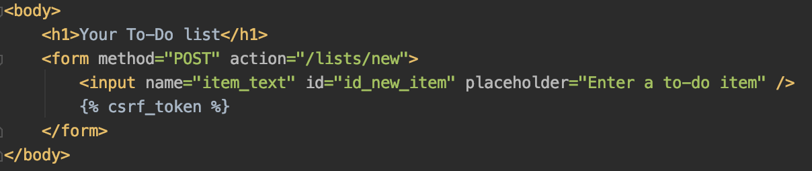

Integrating Bootstrap with Django
A couple days ago I worked through chapter 8 of Obey the Testing Goat. The chapter covers testing layout and styling in Django as well as integrating Bootstrap with Django. I found this chapter interesting, and so I decided to learn a little more about Bootstrap and CSS styling with Django.
A brief overview of Bootstrap
Bootstrap is a popular front-end CSS framework that makes it easier to add styles to a website. Bootstrap includes a host of built-in CSS classes that enable the use of a variety of different styles and components without needing to write the CSS yourself. Bootstrap also provides Javascript plugins that enable various components to function properly. Bootstrap's documentation explains a variety of different component classes in detail. For example, see the documentation page on buttons.
Using Bootstrap with Django -- An example from Obey the Testing Goat
There are two ways to integrate Bootstrap with Django. The first way, which is used in the book, involves downloading Bootstrap and placing the Bootstrap files in your project directory. This method requires a little bit more setup than the second one, but it allows for offline testing of the HTML templates. Once the Bootstrap files are in your project directory, you can then add links to the directory location Bootstrap CSS in your HTML base template, like so:
Here, the link tag refers to the location of the bootstrap.min.css file in the project directory. Any HTML files that inherit from the base class won't need this link. You will also need to make a few changes in order to configure your static files for deployment. For more details see chapter 8 of Obey the Testing Goat.
The second way is to simply place links to Bootstrap files in your base HTML file. You may also need to place links into other HTML files if they don't inherit from a base file. These links allow requests to be served through Bootstrap's content delivery network (CDN). This method requires a bit less setup, but the downside is that serving requests through the CDN requires an internet connection each time you want to run a functional test of your site. The Bootstrap documentation explains how to quickly get started using Bootstrap with the Bootstrap CDN.
Once Bootstrap is set up, you can use utilize a variety of CSS classes within your templates. As a basic example, let's look at web application I'm building through following Obey the Testing Goat. Here's the HTML for the body of the homepage prior to using Bootstrap:

This relatively barebones HTML corresponds to this webpage:
The content from the HTML file appears perfectly fine on the page, but the styling isn't very good, as the form is very off-center and the text is probably too small. After adding Bootstrap CSS classes and refactoring key functionality to a base HTML file, the body of the HTML file looks like this:
As you can see, the key HTML is mostly the same as in the original, but now we've added several CSS classes from Bootstrap to improve the styling for the site. Note the container class, which contains row and column elements and is used to create boxed content (also note the row and column classes within the container). Within those classes, there's a text-center class, which centers the header text. After adding the Bootstrap classes, the homepage now looks like this:
It's still not the most attractive page, but now it's at least well-centered and more easily readable. Of course, there's far more that you can do with Bootstrap, and we could make plenty further improvements the styling, such as adding color, designing buttons, improving the layout, and a host of other possibilities (for some ideas, see the Bootstrap documentation). But this does show that Bootstrap offers a considerable amount of customizability with relatively few lines of code. And if Bootstrap doesn't offer the right styling functionality, you can of course write your own CSS files to style the page in whichever ways you want.
While I've just had a small amount of exposure to Bootstrap, I'd like to continue learning about it and hope to delve into its more advanced features in the future as I continue to work on backend development with Django.